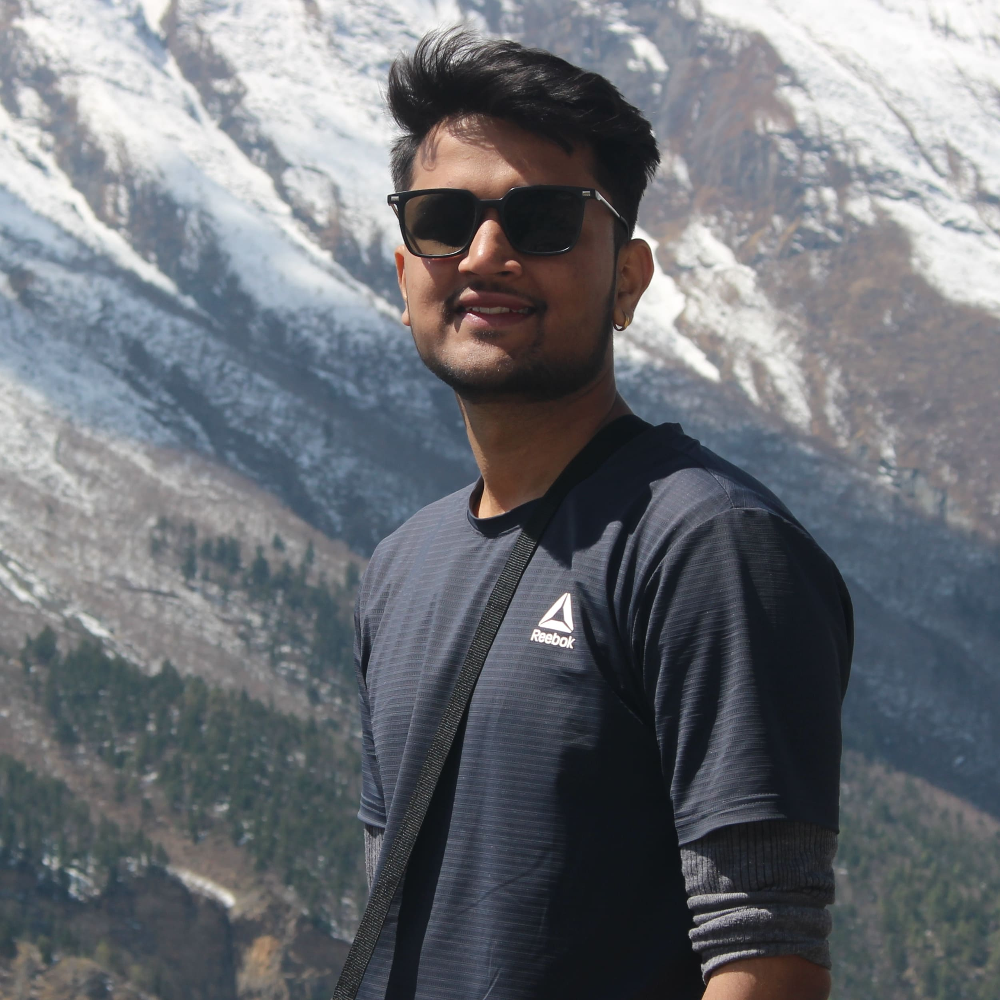

About Me
I am a highly motivated and experienced software engineer with a strong background in .NET and Angular, as well as a fundamental understanding of various programming languages. My primary goal is to leverage my four years of professional experience to contribute effectively to innovative software projects while continuously nurturing my professional growth. My technical skills encompass a diverse range of programming languages and tools, including .NET Core, C#, Angular, SQL, Ionic, JQuery, HTML, CSS, JavaScript, MAUI, AWS, Node.js, React.js, and Python. I am also well-versed in Agile software development practices and have hands-on experience with essential software tools such as Git, GitHub, Jira, Trello, Bitbucket, and MS-Office.
These skills, combined with my knack for problem-solving, quick learning ability, and strong communication and leadership skills, enable me to excel in dynamic and collaborative work environments. In my previous roles as a Senior Software Engineer at Resimator and Whitehat Engineering, I have successfully contributed to the development of commercial websites and software solutions, demonstrating proficiency in Angular, .NET, and SQL. I have also taken on responsibilities in research and architecture design, showcasing my adaptability and innovative thinking. My experience at Verisk further expanded my skill set, offering opportunities to work on full-stack software projects, gain expertise in AWS, and mentor junior team members, thereby enhancing my leadership and communication skills. With a strong foundation in computer engineering, along with a minor and major project experience, I am ready to make significant contributions to cutting-edge software development projects and seek an opportunity to further my career in a challenging and collaborative software engineering role.